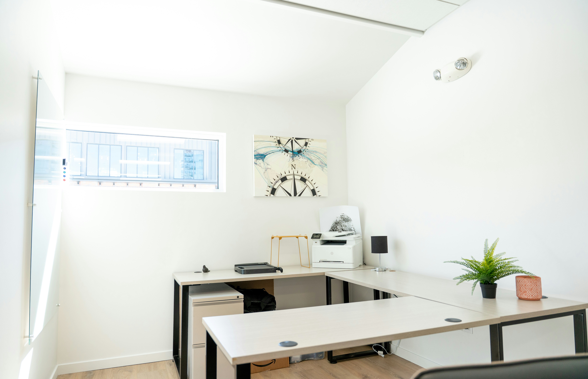
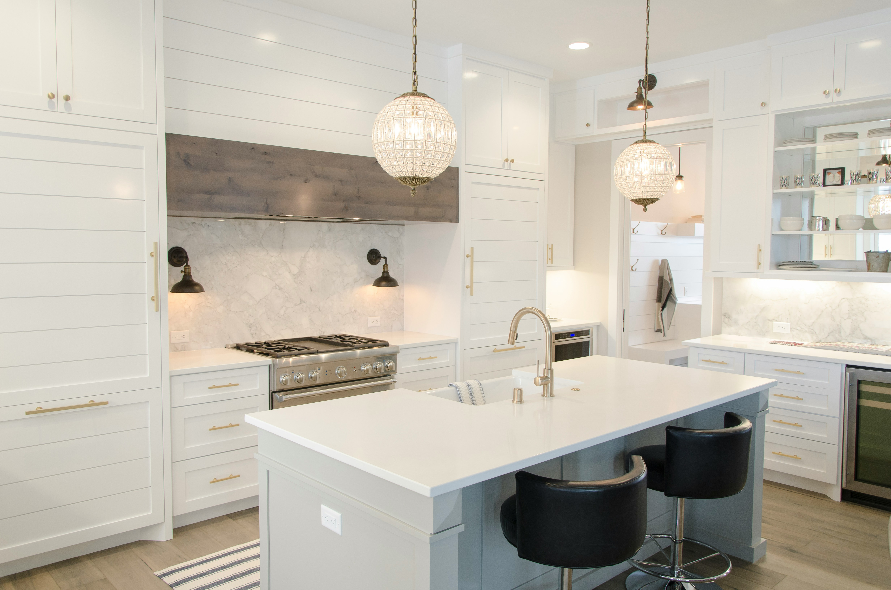

Scope
Your quote explains what is included and what you need to supply.

House extensions · Stourbridge area
Single-storey extensions designed around your home and the way you use it.
What we build
We work from approved drawings and handle the agreed build from groundworks to finish. The aim is a new room that feels connected to the original house.

Before work starts
We check access, drainage, structure and finishes before the build starts.
Your quote explains what is included and what you need to supply.
Steel, support and Building Control details are agreed before opening the house.
We plan the sequence to keep the existing house enclosed for as long as possible.
More building work
Use the arrows to see the work we cover.

02 · Conversions
Turn an underused garage into a practical room.
View garage conversions
03 · Structural work
Open rooms up safely with the right support.
View structural work

05 · Outside work
Prepare the ground, manage drainage and lay a sound finish.
View patios & groundworksFAQs
Size, structure, access and finish all affect the price. We need the drawings and a site visit before quoting.
A straightforward single-storey extension often takes several months.
Some extensions use permitted development rights; others need permission. Check before starting.
Yes, in most cases. They cover structure, insulation, drainage and fire safety.
Usually, but expect noise, dust and some limited access during the work.
Planning an extension?